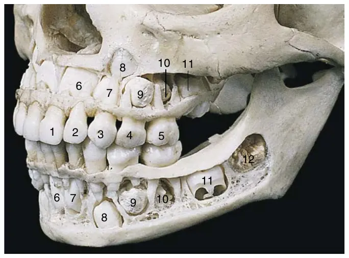

نسخه استخراجشده؛ ترجمه یا تأیید علمی انجام نشده است. وضعیت: captured
دختری ۶ ساله و ۲۰ کیلوگرمی برای ترمیم مولر اول شیری بالا آمده و از «آمپول» میترسد. مادرش میپرسد آیا مثل خودش بلاک میخواهد. برای این دندان چه تزریقی و چه حجمی کافی است؟

کودک بیشتر از خود درمان، از تزریق میترسد و اضطراب قویترین پیشبینیکنندهی کنترل ضعیف درد است. سه نگرانی ویژهی کودک:
همهی دندانهای شیری و مولرهای دائمی با اینفیلتراسیون سوپراپریوستئال در وستیبول بیحس میشوند و بلاک PSA بهندرت لازم است. گاهی زایدهی زیگوماتیک در کودک به استخوان آلوئول بالای مولر اول دائمی نزدیک است و اینفیلتراسیون نمیگیرد؛ آنوقت PSA با سوزن کوتاه گیج ۲۷ و عمق کمتر بزن، یا در مزیال و دیستال همان مولر اینفیلتراسیون باکال کن.
برای کام، پس از بیحسی باکال، سوزن کوتاه گیج ۲۷ را افقی در پاپیلای باکال بالای سپتوم وارد کن و همانطور که به سمت پالاتال جلو میروی محلول بریز تا بافت کام سفید شود.
اینفیلتراسیون در فک پایین کودک، چون استخوان کمتراکم است، معمولاً برای دندانهای شیری کافی است. در کودکان ۳ تا ۹ ساله به اندازهی IANB مؤثر بوده، جز در پالپوتومی مولر دوم شیری. با بالا رفتن سن، موفقیتش کمی کم میشود. نوک سوزن را در وستیبول به سمت اپکس ببر و ۰٫۴۵ تا ۰٫۶ میلیلیتر (یکچهارم تا یکسوم کارپول) آرام تزریق کن.
اشتباه رایج: نقطهی ورود IANB بزرگسال را در کودک به کار بردن؛ تزریق «کمی پایین» هم معمولاً میگیرد؛ گاو-گیتس و واَزیرانی-آکینوسی بهندرت لازم میشوند.